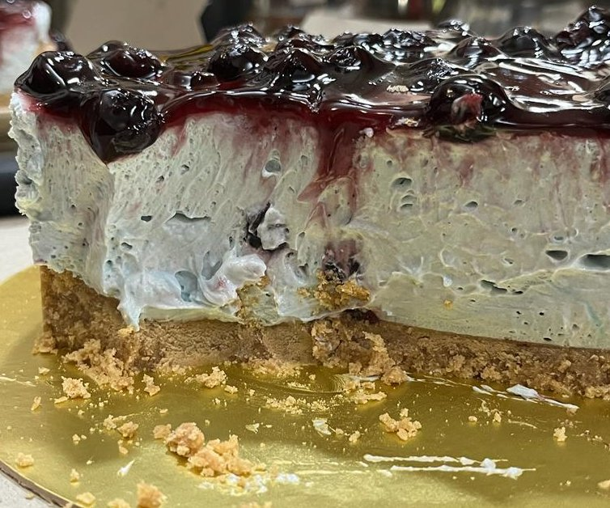

Blueberry Cheesecake 🫐

Description
Swirling blueberry puree into cheesecake batter doesn't just result in an absolutely stunning cake, it's alsoextremely delicious.
The cheesecake stays extra-creamy and has the perfect tartness to it that will have you saying, "just one more bite," another thousand times.
It's the perfect ending to an outdoor dinner and though the cheesecake is just as rich the
fresh fruit brings a welcome brightness to it making it one of our favorite summer desserts.
P.S- This is one of the few recipes mastered by yours truly Rizzi.
Ingredients
- 1 cup graham cracker crumbs
- ¼ cup melted butter
- 2 tablespoons white sugar
- 2 (8 ounce) packages cream cheese, softened
- 1 cup sour cream
- ¾ cup white sugar
- 2 tablespoons all-purpose flour
- 1 teaspoon vanilla extract
- 4 large eggs
- 2 cups frozen blueberries, dry pack
- ⅓ cup blueberry jelly
Steps
- Preheat the oven to 325 degree F (165 degrees C).
- Mix graham crumbs, melted butter, and 2 tablespoons sugar in a bowl until well combined. Pat mixture into the bottom of a 9-inch springform pan.
- Mash cream cheese in a mixing bowl until soft and creamy. Gradually beat in sour cream, 3/4 cup sugar, flour, and vanilla. Beat in eggs, one at a time. Pour mixture into the crumb-lined pan.
- Bake in the preheated oven until firm to the touch, about 1 hour.
- Place baked cheesecake in the refrigerator until thoroughly chilled, about 4 hours.
- Remove cheesecake from the pan by loosening the edges with a knife and opening the springform latch. Transfer to a serving platter. Place frozen blueberries on top. Melt jelly in a saucepan over low heat; spoon over blueberries to glaze. Chill in the refrigerator until ready to serve.
Go To Top
Go To Main Page